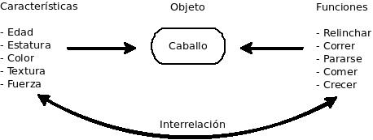

Las Clases/Objetos son la médula espinal de la PCO, la cuál intenta hacer el código más entendible para el humano, esto, engloband olos datos y los procedimientos en núcleos concentrados de procesos llamados objetos. Los "objetos" tratan de emular los objetos de la vida real.
En el mundo real existen objetos que tienen ciertas características que los definen y ciertas capacidades a funciones que se valen de esas características para lograr un fin o simplemente modificarlos. Por ejemplo:

Así, un objeto siempre tendrá:
Características: que son sus datos que lo definen, es decir, sus variables.
Acciones (que pueden ser realizadas): es decir, sus funciones. Para llevarse a cabo necesitan las características del objeto o pueden modificar estos.
Definiendo un objeto tenemos que:
Objeto: es la entidad existente (ente concreta) definida por la idea (clase) abstracta. El objeto comprende características comunes con aquellas de la misma clase pero cada una es distinta y real.
Así, la clase es la idea, el concepto fundamental, la escencia de un objeto. Una clase se puede considerar como un patrón para constantes, es solo una declaración, no ocupa espacio de memoria ni tiene asociado ningún objeto. Debe ser un objeto el que se asocia a una clase, ya que es solo un tipo de variable de una clase determinada.